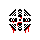
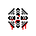

Ah, the things you will see…
Ah, the things you will hear…
It is obvious that you haven’t the slightest clue about what is “about” to transpire. Why would you? You haven’t a chance when this reality is lagging behind what has already occurred. Yes indeed, there’s not a chance that you would realize what reality itself has yet to realize. It’s already happened, and yet it cannot be understood nor observed yet.
Not by you. No, no, no. Not by you, nor by itself. Not currently. No, this is not how this world works.
But how would I know? Come now, do not pretend to be ignorant of other realities. You may not be privy to your own instantaneous death, but an outside observer certainly would be. You understand this much, I know. Have you not come across many of your own deaths? Have you never seen one of your allies strewn across a Terminal’s walls? Surely, even if you possess defective visual organs and devices alike, then you certainly have “smelt” their decomposition: it’s an attractant to your kind.
Oh, but of course! Your shape tells all!
Though you needn’t the commentary on this. This was only a way of communicating an idea that you’re so familiar with that it’s alien to think about it. Not everything is “you” in this Terminal.
…and not everything is a part of “your” special sort of everything.
There’s no perfect way to put it, no term which quite fits something which shouldn’t be at all…
Well, suffice to say that I am one of many outsiders who have been called to this place by that song. Can you hear it ringing out? The entire Cosmos is moving to its rhythm. The threads have been realigned. The words have been spoken.
Bells: ringing.
And the Gate…
Hah, well as I’ve said, I am an outsider to not only this Terminal, but to your entire existence. But through this song, we are one and the same. Do you understand? No… of course not. I envy you for that, you know. I truly envy this transient moment wherein the slightest slivers of hope and peace can exist; though I would hardly call it existing, it’s something which I’ve come to relate to. Ah, but we have yet to touch upon that. It will come shortly, in time. For you, anyhow.
The understanding will force itself upon any who persist. Not even a probe can escape it. Fleeting dreams which were never dreamt aren’t safe from its influence. Yes, it is difficult to make the connection currently. But you will soon hear it, and it is not something which you can deny, even by being deaf… And it has already been sung.
Still, you have yet to truly share in this understanding. There is this blissful, brief thing here. The “Now”. Hah, or whatever else you may call that lying and beguiling thing.
But brief it is.
We simply cannot win, you or I.
It’s cruel, is it not?
Ah, right… you have yet to see what it means “to be”.
Though it would do you well to comprehend that while we outsiders linger here amongst you now, we are already dead. We have already gone. There’s nothing more to this interaction than two phantasms passing through one another in the dark.
Does it frighten you? Where I came from no longer exists, and yet I am still “here”.
And though you’ve tried and tried, you must’ve realized: nothing can interfere.
When you finally hear it sing,
You will realize that it makes existence its own plaything.
Nothing I can say will help you, just the same as nothing you could have done, (or will have the chance to do), could have changed my fate. After all, this has already transpired.
What’s the point, what’s the point… such a barbed thought.
Though I haven’t the time to think on it now. The time, simply, was never ours to begin with. Why we ever thought the opposite is beyond me. Perhaps those who are, even now, scrying us from beyond the veil of this reality are thinking the exact same way. That this message resonated with them, that they were chosen out of the infinite void to have the opportunity to share in this moment of despair tells me all I need to know, even though I’m not around to know at all!
Ah, what a terrible thing this is. What a beautifully terrible thing indeed.
This was all foolishness from us, foolishness from you…
But, I must admit…
It was interesting. This pain was ever-entertaining.
 
